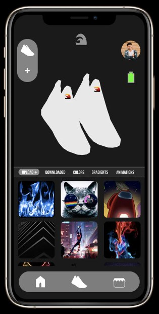
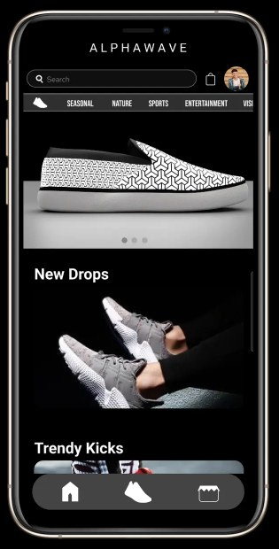

The first app-controlled adaptive footwear. Pick a color or pattern on your phone and the shoe follows.
Overview
Alphawave was a smart footwear venture I founded and ran from 2020 to 2023. The product was a sneaker with color-shifting panels and a companion mobile app. You choose a style in the app, it sends the command over Bluetooth, and the panels on the shoe change to match.
It was part hardware, part mobile software. We took it from a concept sketch through market discovery, working prototypes, and an MVP definition, then paused before production. This page covers what we built, what we learned, and why we stopped.
E-ink Prism Model
My contributionProduct Owner and Founder. Owned vision, discovery, requirements, feasibility, vendor conversations, the BLE command protocol, app design, and user testing.
Timeline and type2020 to 2023. Hardware plus mobile SaaS, wearable tech, IoT.
ScopeConcept, market discovery, MVP definition, and technical pre-validation. Production was paused.
Team size and who did what (the electrical engineer, any co-founders), and whether you want them named.
Customer's Challenge
Sneakers are one of the main ways young people show who they are, and yet a pair looks the same on day 300 as on day one. The only way to change the look is to buy another pair. Customization exists, but it is slow, expensive, and permanent.
Shoes that adapt like your phone wallpaper: customizable, expressive, and digitally intelligent.
The product vision we worked from
I ran a market gap analysis across fashion tech, smart wearables, and customization products. Four trends kept showing up: self-expression, modular fashion, sustainable personalization, and a digital identity that younger buyers carry across everything they own. Smart wearables were a market of roughly $12B and growing, and almost none of it was on people's feet.
What I built in discovery
Product vision statement and problem statement
User personas for sneakerheads, lifestyle users, and creators
Market size model
Business model canvas for customizable hardware plus digital experiences
Problems
Solutions
A new look means a new pair
One pair, many styles
Custom sneakers are slow and permanent
Change the style from your phone in seconds
Full manual design overwhelms people
Curated presets and collections
Screens in shoes are fragile and hot
Static color-shifting e-ink panels
Smart shoes that die by lunch
Low power panels on a small LiPo battery
Persona
The Sneakerhead
Three personas came out of discovery: sneakerheads, lifestyle users, and creators. The sneakerhead is shown in full because they set the bar for how the shoe has to look when the panels are off.
Jordan R.The Sneakerhead
JR
Age: 22Life stage: College seniorCollection: 20+ pairsPhone: Always in hand
Personality
Blends inStands out
Designs from scratchPicks a preset
Waits for reviewsBuys first
Bio
Follows drops, matches shoes to the outfit, and posts both. Runs out of closet space and money before running out of ideas.
Goals
A pair nobody else has today
Match the shoe to the outfit
Something worth posting
Frustrations
Every new look costs another pair
Customs take weeks and cannot be undone
Tech shoes that look like gadgets
How persona discovers the product
TikTok and Instagram creators, sneaker communities, friends.
How persona uses the product
Pairs once, saves favorites, and swaps presets before leaving the house.
Motivations
Self-expression
Looks good switched off
Easy to use
Durability
Jordan is a draft built from your persona categories. Swap in the real persona sheets for all three, or give me the details and I will redraw them.
Customer Journey
From unboxing to a new look
Phases
Discover
Unbox and charge
Pair
Browse styles
Apply
Wear
Thoughts and feelings
"Wait, the shoe changes color?"
"Does it feel like a real sneaker?"
"Why can't it find my shoe?"
"Just show me good ones."
"That was one tap."
"Will this survive rain?"
Emotional experience
User actions
Sees a creator swap styles on camera
Charges the pair, tries them on
Opens the app and scans for the shoe
Scrolls presets and collections
Previews a style, taps apply
Wears them out, swaps again later
Touchpoints
Short video, pitch demo
Shoe, charging port, battery housing
Bluetooth scan, onboarding prompts
Style Library, favorites
Live Preview, One-Tap Apply
Panels, housing, battery
Pain points
Sounds like a gimmick
Weight and comfort
Pairing was the top friction in testing
Manual editing felt like work
Preview has to match the real shoe
Durability and weather
User Story
As someone who expresses myself through sneakers, I want to change how my pair looks from my phone, so that one pair can match any outfit without buying another.
Define
Discovery left one question that mattered more than any feature. Can color-changing technology be built into a shoe and still flex, last, and hold a charge? Everything else followed from that.
How might we let one pair of shoes carry many looks without making it fragile?
How might we give people real choice without asking them to become designers?
How Might We?
One look per pair
Color panels on the upper
Removable panel slots
Presets stored on the shoe
Swap in seconds
Too much control
Preset first, editor second
Style Library
Favorites
Collections by mood
Will it survive
Sealed housing
Flex PCB
Low voltage panels
Protected wiring channels
Pairing friction
Automatic device detection
Onboarding prompts
Preview before sending
Requirements and Technical Feasibility
Before designing anything in detail, I tested whether the idea could physically work. That meant materials, vendors, patents, electronics, and cost, in that order.
Exploration
What we did
Material feasibility
Evaluated OLED, LCD mesh, flexible e-ink, and electrochromic film
Vendor discussions
Met with E Ink Corp and several Shenzhen prototyping labs
Legal and patent research
Ran an IP feasibility check and started provisional patent development
Technical workshops
Worked through battery integration, Bluetooth Low Energy controllers, and flex PCB constraints
Engineering budgeting
Cost modeling for prototype versions and a bill of materials analysis
The display decision
Option
What it offered
What ruled it in or out
Call
OLED screens
Full color and animation
Fragile, ran hot, and cost too much
Dropped
Static e-ink panels
Color change that holds without constant power
Flexible enough, low power, workable cost
Chosen
LCD mesh and electrochromic film
Evaluated as alternatives
Did not beat e-ink on the same criteria
Not pursued
Deliverable: a Technical Feasibility Assessment and a Build vs Buy Matrix. The decision was to move away from OLED and toward static color-shifting e-ink panels driven by a Bluetooth microcontroller.
I kept the LCD mesh and electrochromic row vague on purpose. Tell me the real reasons each lost and I will split them into their own rows.
Ideation
We went wide on what the shoe could do and what the app could let people do, then cut to what a bootstrapped team could prove.
How the shoe changes
Static color-shifting e-ink panels
OLED video panels
Animated patterns
Removable color panel slots
Electrochromic film
How people choose a style
Curated presets
Full manual editor
Color wheel
Favorites
Collections: Seasonal, Minimal, Streetwear
How shoe and phone talk
Bluetooth Low Energy
Automatic device detection
Presets saved on the shoe
Cloud preset sync
Selected Ideas for Early Concept
Static color panels, no animation
Preset-based Style Library
One-tap apply over Bluetooth
Live preview before sending
Collections
Prototype and User Testing
Prototyping ran in four passes: concept sketches and 2D renders, low fidelity wireframes in Figma, high fidelity app screens, and physical builds. The three workstreams below ran side by side.
Hardware
3D renders and engineering-ready models in Blender and Keyshot, with battery housing, controller compartment, wiring channels, and removable panel slots
Physical prototypes on Arduino, then ESP32
Bill of materials: fabric base, e-textile layer, 3.7V LiPo battery, ESP32 controller, wiring harness, e-ink panel prototypes
Annotated CAD files and supplier packets for Shenzhen manufacturing partners
Firmware
Written in C/C++ for Bluetooth communication, boot sequencing, power management, and driver control
Logic for real-time color switching and sync timing
Presets stored in on-board EEPROM memory
Custom circuit board built with an electrical engineer: power regulation, Bluetooth module, drivers, charging
Serial debugging and edge-case simulation at each stage
Mobile app
React Native for iOS and Android, chosen for faster iteration and lower cost
Bluetooth command protocol that maps each app action to a hex command for the firmware
Screens: Live Preview, Color Wheel, Preset Editor, One-Tap Apply Style
Preview simulation that mirrors how the real panels behave
How the pieces connect
UI LayerReact Native screens. Style Library, Live Preview, presets.
→
Bluetooth Service LayerScans, pairs, and sends hex command strings for color, style, and preset sync.
→
Firmware ControllerESP32 on the shoe. Drives the panels and stores presets.
E-ink prism model
The direction we chose
OLED model
The direction we dropped
Style Library

Collections and drops

The two render spaces are held for your GIFs. The app screens are cropped from your screenshot, so send the originals if you want them sharper.
What testing told us
100+tests with lifestyle users, fashion students, and TikTok creators
15+users in app usability sessions
4display technologies evaluated
2controller platforms, Arduino then ESP32
Feedback
Value
Outcome
Real customization is hard to find in footwear
High
Confirmed interest
People preferred presets over complex manual editing
High
Simplified the app around presets
Worries about durability and weather resistance
High
Redesigned the housing
Asked for preset collections such as Seasonal, Minimal, Streetwear
Medium
Added the Collection concept
Bluetooth pairing flow caused friction
High
Added automatic device detection and onboarding prompts
Feedback also fed back into the physical design: wearability, weight distribution, charging method, and how the shoe looks with the panels idle. Deliverables: a usability report with the iteration path for V2, a high fidelity app design system, a design spec for hardware integration, and a clickable prototype for demos and pre-investor pitches.
MVP Definition
Feasibility, user desirability, and cost modeling pointed to the same place. The MVP was an app-controlled static color-shifting shoe. No animation and no video, just color panels that change on command.
Must have
Mobile app integration over Bluetooth
Quick style swapping
6 to 10 starter presets
Built to withstand real wear
Should have
Favorites
Collections
Automatic device detection
Could have
Color wheel and manual preset editor
Cloud preset sync
Won't have (this version)
Animation or video on the shoe
OLED panels
Battery target for the MVP was limited use, under 8 hours per charge. Deliverables: MVP feature list with MoSCoW prioritization, a go-to-market MVP plan, and pitch assets for investor readiness.
The Must and Won't columns are from your MVP definition. I sorted the Should and Could columns myself. Replace them with the real MoSCoW list.
User Stories and Acceptance Criteria
Pairing
P
As a new owner, I want the app to find my shoes on its own, so that I am not stuck on a Bluetooth screen.
The app should detect the shoe automatically and walk the user through pairing with onboarding prompts.
Choosing a style
S
As a user, I want to pick from ready-made styles, so that I get a good look without designing one.
The app should ship with 6 to 10 presets, grouped into collections, with favorites one tap away.
V
As a user, I want to see the style before it goes to the shoe, so that I know what I am getting.
Live Preview should mirror how the real panels behave before any command is sent.
Applying and wearing
A
As a user, I want to change my shoe in one tap, so that I can swap looks on the way out.
One-Tap Apply should send the command over Bluetooth and the panels should change to the chosen style.
M
As a user, I want my shoe to keep its style without the app open, so that it works away from my phone.
Presets should be stored on the shoe and the panels should hold their color between commands.
D
As a user, I want to wear them like normal sneakers, so that I am not worried about weather or a day of walking.
The housing should protect the electronics in everyday use, with a battery target of under 8 hours of use per charge.
I wrote these from your feature list and testing notes. Replace them with the stories and acceptance criteria from your original requirements.
Risks and Outcome
Why MVP production paused
Supply chain and manufacturing risk
Too high for a bootstrapped budget, with every key part sourced overseas.
Durability testing and certifications
A shoe with a battery and electronics has to pass far more than a normal sneaker, and each test costs time and money.
Unit cost
$85 to $120 per pair to manufacture at first. Too high without volume.
What I learned
Product work that spans hardware and software needs deep technical feasibility and close vendor collaboration from the start.
People favor simplicity. Users did not want full control. They wanted curated choices.
Faster does not mean better. Test desirability before building feasibility.
Pricing Strategy
Where it stood
No retail price was set. Production paused before pricing.
First-run manufacturing cost came in at $85 to $120 per pair, which is too high without volume.
The model
Customizable hardware, plus digital experiences in the app.
Add the retail price you were targeting and any plan for paid presets or collections.
Lean Business Model Canvas
Problem StatementHow might we let one pair of shoes carry many looks, without making it fragile or hard to use?
Solution
Static color-shifting e-ink panels
Companion app with presets
One-tap apply over Bluetooth
Value PropositionShoes that adapt like your phone wallpaper. One pair, many styles, changed from your phone.
Unfair Advantage
Working hardware, firmware, and app built together
Provisional patent work started
Direct supplier relationships
Customer SegmentsSneakerheads, lifestyle users, and creators.
Existing Alternatives
Buying another pair
Custom sneakers
Key Metrics
Cost per pair
Battery life per charge
Pairing success
Preset swaps per user
High-level Concept
Alphawave = a phone wallpaper for your sneakers
Channels
TikTok creators
Sneaker communities
Investor demos
Early Adopters
Fashion students
Content creators
Sneakerheads
Cost StructureComponents and bill of materials. Prototyping and tooling with Shenzhen partners. Durability testing and certifications.
Revenue Streams (Pricing Model)The shoes, the wireless charger for the shoes, special digital color and pattern purchases for the shoes, and product care accessories.
Key metrics, channels, and existing alternatives are my fill-ins. Swap in your original canvas if you still have it.
Next Iteration
Generative AI and flexible display technology have both moved a long way since 2023. If Alphawave came back, it would come back as AI-powered adaptive footwear.
Upload an outfitTake a photo of what you are wearing today.
Get a matching styleThe app generates a shoe style that fits the outfit.
Sync instantlyThe style is sent to the shoe and the panels change color.